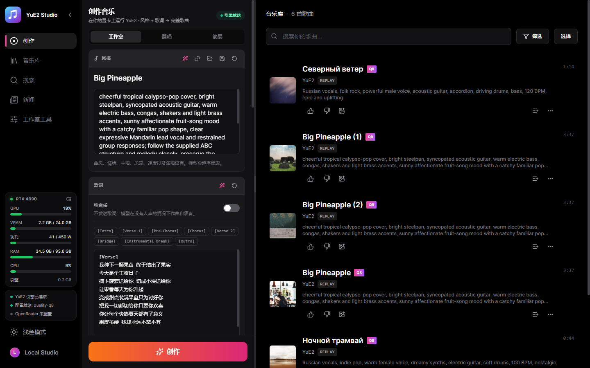
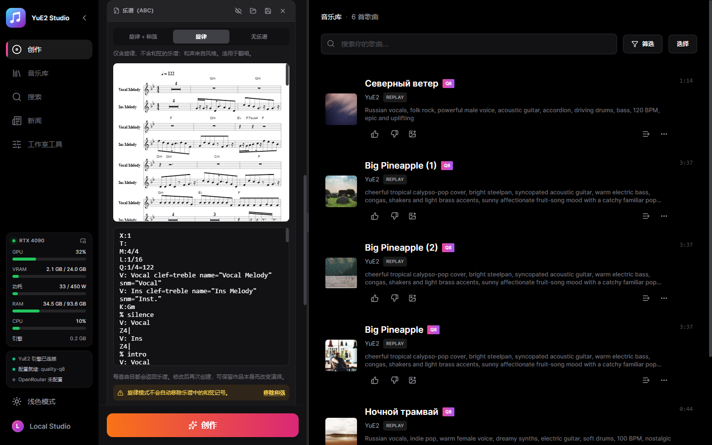
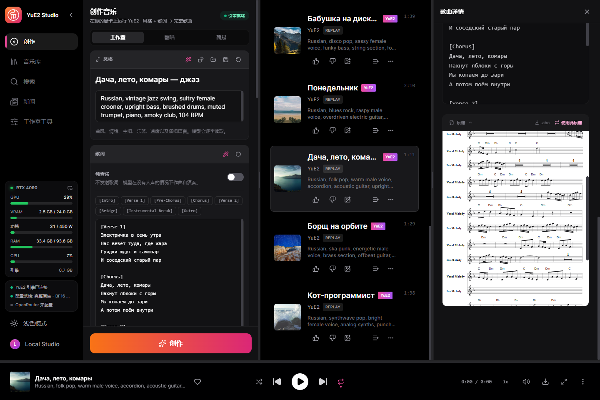
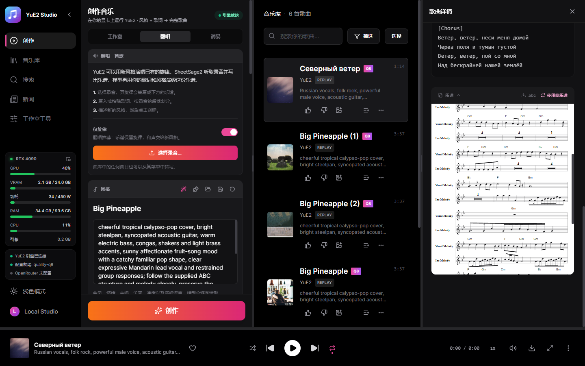
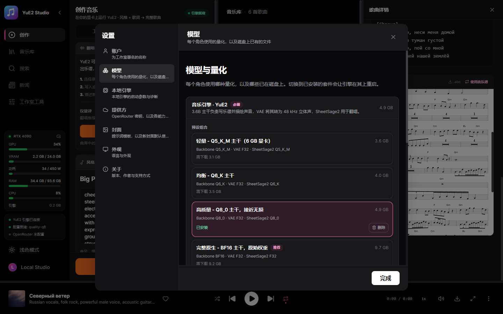

带可编辑乐谱的完整歌曲，在你自己的显卡上生成
YuE2 的桌面工作室。YuE2 是一个开源歌曲模型，会先写乐谱再演唱。描述风格、写好歌词，模型就会以五线谱形式创作带和弦的旋律，再把它演唱成带人声的完整歌曲。你可以阅读乐谱、修改它，并用不同的声音重新渲染同一首作品。单个可执行文件，无需 Python 和启动器。
Windows 10/11 x64，显存 6 GB 以上的显卡：NVIDIA（GTX 16 / RTX 20 或更新）使用 CUDA；AMD 和 Intel 通过 Vulkan 运行，属实验性质。模型在工作室内按你的决定下载。

功能
除非你自己接入云端密钥，以下一切都在你的电脑上运行。
完整歌曲
根据风格和歌词生成最长六分钟的歌曲。在 RTX 4090 上使用 Q8_0 模型组，3:38 的歌曲约 46 秒完成。
可编辑的乐谱
作品以 ABC 记谱法返回并排版为五线谱。修改后再次创作：作品保持不变，演绎随之改变。
先写乐谱
在演唱之前几秒内只写出乐谱：阅读、修改，再创作。相当于 yue2.cpp 的 yue-plan。
翻唱
SheetSage2 把录音的旋律记成乐谱，YuE2 用你的风格演唱。歌词必须贴合这段旋律：用原词，或每行音节数相同、重音落在同样音符上的新词，否则演唱会偏离旋律。
精确重放
每首曲目都保存请求和音频编码：可逐位重新渲染，也可换步数、换声音种子或生成多个变体。
110 个现成示例
yue2.cpp 自带的风格、歌词和乐谱组合（含翻唱），一键载入。
写作助手
本地 Gemma 模型或 OpenRouter 根据想法撰写风格和歌词，并按要求编辑乐谱。
逐字卡拉 OK
每个字都带时间戳的增强 LRC，由 Parakeet 或 Whisper 对齐。
显卡分轨
鼓、贝斯、其他、人声、吉他和钢琴，由 HT-Demucs 分离。
LoRA
作用于作曲或音色的 LoRA 与 LoKr，各自设置强度。内置现成目录，也可在 Hugging Face 搜索并下载所选。
训练你自己的 LoRA
用同一歌手或风格的歌曲，在你的显卡上以 HOT-Step 的训练器和配方训练 LoRA。每项设置都可修改，数据集可在本工作室与 MiniMax Music3 Studio 之间迁移。
拖入即成数据集
拖入一个文件夹：歌词逐字取自播放器使用的歌词库（LRCLIB、QQ 音乐、酷狗），只有它们都没有的歌才由 Whisper 听写，MOSS-Music 聆听每首歌，助手写出风格。每首歌都显示进度，重启后从中断处继续。
音频处理
降噪、Spectral Lifter、人声自然化、你自己的 VST3 插件，以及参考母带处理。对比处理前后，保存为版本或丢弃。
由你的智能体操控（MCP）
连接 Claude Code、Claude Desktop 或 Cursor，智能体就能做工作室能做的一切：写歌并生成、整理数据集并训练、绘制封面、在视频编辑器里剪辑 MV、播放歌曲——还能看到窗口并点击按钮。模型的写作规则随之提供，风格和歌词由智能体自己来写。
示例
在全新安装、推荐模型组下生成，按工作室保存的原样呈现，包括英语、西班牙语、中文、日语和俄语。
English, funk disco, groovy male voice, slap bass, wah guitar, brass stabs, four on the floor drums, playful, 118 BPMEnglish, country, warm male baritone, acoustic guitar, pedal steel, fiddle, brushed drums, easygoing, 96 BPMSpanish, latin pop, bright female voice, nylon guitar, congas, piano montuno, bass, sunny danceable, 102 BPMMandarin, city pop, smooth male voice, electric piano, funky bass, clean guitar, drum machine, warm night mood, 108 BPMJapanese, j-rock, energetic female voice, distorted electric guitars, driving bass, fast drums, anime opening, 168 BPMRussian, folk pop, warm male voice, accordion, acoustic guitar, upright bass, 104 BPMRussian, vintage jazz swing, sultry female crooner, upright bass, brushed drums, muted trumpet, 104 BPMRussian, blues rock, raspy male voice, overdriven electric guitar, hammond organ, shuffle drums, 96 BPMRussian, disco pop, sassy female voice, funky bass, string section, four on the floor drums, 120 BPMRussian, ska punk, energetic male voice, brass section, offbeat guitar, fast drums, 150 BPMRussian, synthwave pop, clear expressive female voice, analog synths, punchy drum machine, 112 BPMRussian, upbeat pop-punk, energetic male vocals, driving distorted electric guitars, fast bass lines, crashing drums, rebellious and fun, 185 BPM截图
工作室本身，使用此语言。




模型
可运行的模型组由 YuE2-3B 主干和 VAE 组成；SheetSage2 可选，仅翻唱需要。
| 你的显卡 | 模型组 | 下载 |
|---|---|---|
| 12 GB+ | 完整原生 — BF16，原始权重 | 9.7 GB |
| 8 GB+ | 高质量 — Q8_0，接近无损 | 4.9 GB |
| 7 GB+ | 均衡 — Q6_K | 4.0 GB |
| 5.5 GB+ | 轻量 — Q5_K_M | 3.6 GB |
大小已包含 SheetSage2。工作室会预选你的显卡能运行的模型组，但是否下载始终由你决定。每个文件都按固定的 Hugging Face 版本校验 SHA-256，中断的下载可以续传。
开始使用
- 安装 — 运行安装程序，或把便携版压缩包解压到任意位置。
- 选择模型组 — 首屏会预选显卡能运行的组合，只下载缺少的文件。
- 写作 — 写好风格和歌词，或载入示例；纯音乐只需一个开关。
- 创作 — 引擎自动启动，歌曲连同乐谱进入你的曲库。
各部分在哪里运行
默认全部本地运行。云端密钥由你添加，只用于你选择的功能。
| 部分 | 运行位置 | 大小 |
|---|---|---|
| YuE2 引擎（yue2.cpp） | 显卡：CUDA、Vulkan 或处理器 | 已内置 |
| YuE2 模型组 | 你的显卡 | 3.6–9.7 GB |
| NVIDIA cuBLAS | 仅限 NVIDIA 显卡 | 391 MB，一次 |
| 卡拉 OK 时间轴 — Parakeet 或 Whisper | 你的电脑 | 可选 |
| 分轨 — HT-Demucs | 显卡或 CPU | 可选 |
| 写作助手 | 本地 Gemma 或 OpenRouter | 可选 |
| LoRA 训练 — HOT-Step ace-train | NVIDIA RTX 30 或更新，11 GB 显存 | 8 GB，可选 |
| 按听觉描述歌曲 — MOSS-Music-8B | 约 12 GB 显存 | 10 GB，可选 |
| VST3 宿主 — HOT-Step | 你的电脑，独立进程 | 内置 |
构建方式
服务编译进桌面程序并管理 C++ 引擎。完成的歌曲由服务自己导入，因此刷新或关闭窗口也不会丢失结果。
React UI ─┐
├─ YuE2-Studio.exe (Tauri window + Rust/Axum service)
Rust axum ┘ │
└─ yue2.cpp `yue-server` (C++/CUDA, GGUF)
隐私
你的音乐属于你，并留在你的磁盘上。
无需账号
没有任何需要注册的东西。
无遥测
工作室不会报告你生成了什么。
云端需主动开启
在你添加密钥之前，没有任何数据离开电脑，之后也只用于对应功能。
作者
Nerual Dreming — 艺术家，ArtGeneration.me 和 Neuro-Cartel 社区创始人，ACE-Step Studio 与 MiniMax Music3 Studio 的作者，本工作室即由它们发展而来。